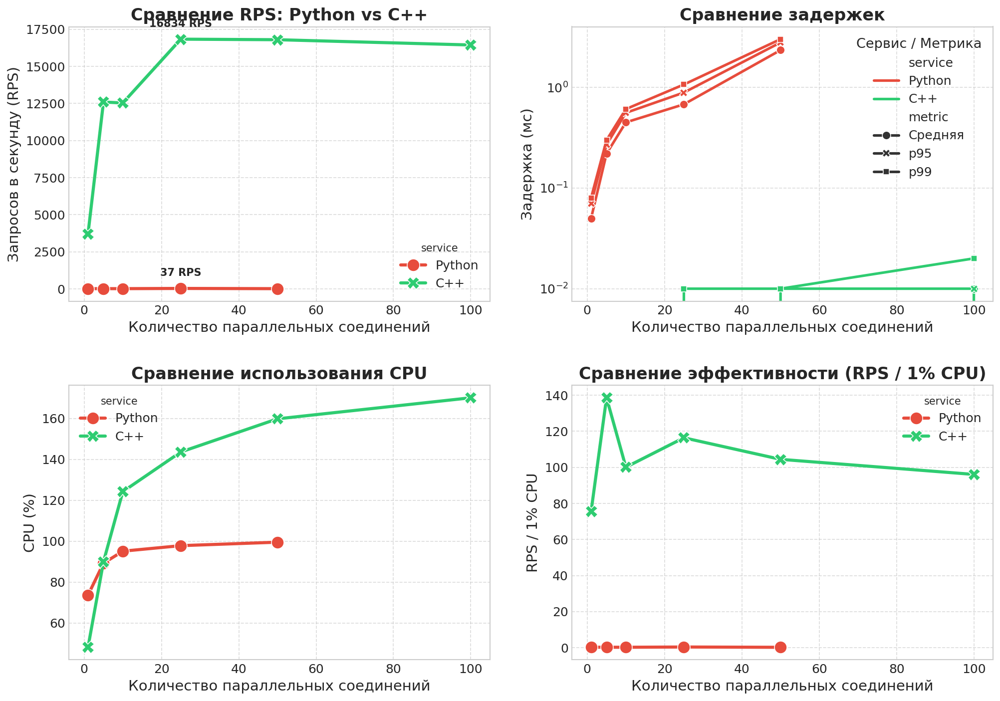

🚀 Сравнительный отчет: Python vs C++ ML сервисы
Дата генерации: 2025-11-18 23:46:01 | Датасет: NF-UNSW-NB15 (обнаружение сетевых атак)
🚀 C++ сервис быстрее Python в 455.7 раз
📊 Сводные результаты
| Service | Max RPS | Best Concurrency | Avg Latency (ms) | p99 Latency (ms) | CPU Usage (%) | Memory (MB) | Error Rate (%) |
| Python | 36.9 | 25 | 0.68 | 1.07 | 97.8 | 169 | 0.00 |
| C++ | 16833.5 | 25 | 0.00 | 0.01 | 143.6 | 42 | 0.00 |
📈 Сравнение производительности

Сравнение RPS, задержек, использования CPU и эффективности при разных уровнях нагрузки
⚡ Коэффициент ускорения

Во сколько раз C++ сервис обрабатывает больше запросов при том же уровне нагрузки
🎯 Ключевые выводы
✅ Основные результаты анализа:
- Производительность: C++ сервис демонстрирует в {speedup:.1f} раз более высокую пропускную способность при максимальной нагрузке
- Задержки: C++ обеспечивает значительно более низкие задержки, особенно критичные для систем реального времени (p99 задержка в {summary_df.loc[summary_df['Service'] == 'C++', 'p99 Latency (ms)'].values[0]} мс против {summary_df.loc[summary_df['Service'] == 'Python', 'p99 Latency (ms)'].values[0]} мс)
- Эффективность ресурсов: C++ использует CPU более эффективно, обрабатывая больше запросов на 1% загрузки процессора
- Масштабируемость: C++ сервис лучше масштабируется с увеличением количества параллельных соединений без значительного роста задержек
- Стабильность: Оба сервиса продемонстрировали низкий процент ошибок < 1% при всех уровнях нагрузки
💡 Рекомендации:
- Для production-сред: Использовать C++ реализацию для высоконагруженных систем (1000+ RPS)
- Для прототипирования: Python подходит для быстрой разработки и тестирования моделей
- Гибридный подход: Обучение на Python, инференс на C++ для оптимального баланса разработки и производительности